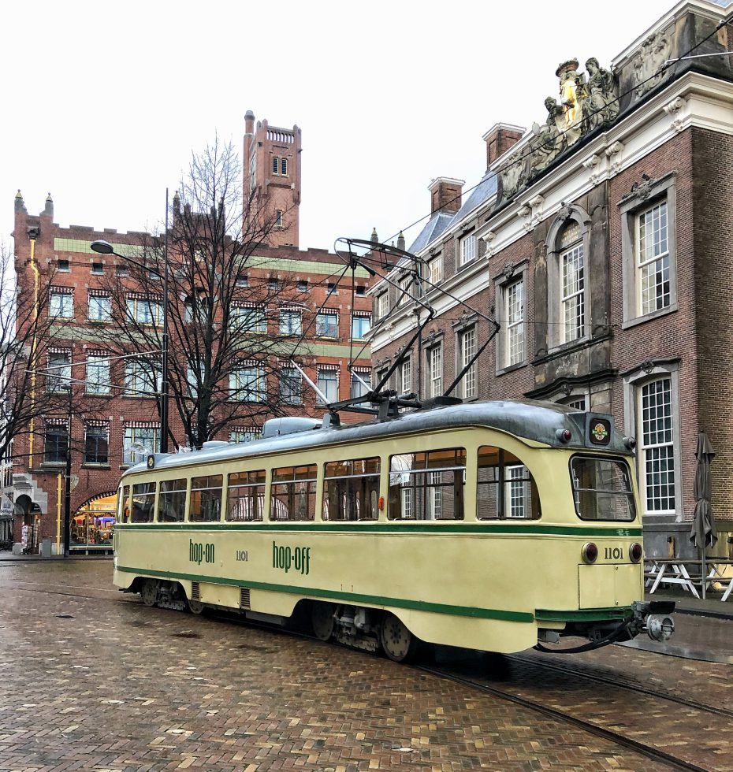

Wat te doen in Den Haag? 16x originele activiteiten

We kennen Den Haag natuurlijk allemaal als stad waar de regering zit, maar deze stad heeft nog véél meer te bieden. Je vind hier veel historische gebouwen, een groot aanbod aan winkels en ook zijn hier genoeg leuke activiteiten in Den Haag. Hieronder vind je tien originele dingen om te doen tijdens een bezoekje aan de mooie stad achter duinen: Den Haag.
Check hieronder 10 x leuke plekken voor drankje in Den haag >
Bewonder het Mauritshuis
In het Mauritshuis vind je de beste Nederlandse schilderkunst uit de Gouden Eeuw. In het hart van Den Haag bevindt zich dit museum met een wereldberoemde collectie. Nadat je de meesterwerken van onder andere Vermeer en Rembrandt hebt bekeken kun je terecht in het museumcafé en de museumwinkel. Daarnaast vind je hier ook een bibliotheek én een evenementen zaal.
Plan een Haagse audio tour in een historische tram
Wil je echt een bijzondere rit door Den Haag, kies dan voor deze 60 jaar oude tram die het centrum van Den Haag verbindt met het strand van Scheveningen. Met een ticket kun je de hele dag met de tram mee en ook nog eens onbeperkt in- en uitstappen. Tijdens de rondrit rijd je voorbij attracties en bezienswaardigheden, die allemaal toegelicht worden via de audio. Je kunt hier zelf de taal inschakelen die je wil. Onze tip: stel het Haagse accent in en de tour wordt nóg leuker. De tram rijdt in de zomer elke 30 minuten van ongeveer 10:00 tot ongeveer 17:30 op zaterdag en zondag, in de vakanties en op feestdagen.
Bron: HPS
Beklim de Grote Kerk
De Haagse Toren is een van de oudste gebouwen van Den Haag. Een leuke activiteit is het beklimmen van deze toren, welke al eeuwenlang hét herkenningspunt van de stad. Je moet er wel even 288 treden voor klimmen maar dan heb je vanaf 92,5 meter wel het mooiste uitzicht over de stad. Treed hier in de voetsporen van Christiaan Huygens, van Gogh en zelfs Napoleon, ook zij beklommen namelijk dit unieke stukje Den Haag.
Kijk binnen bij deze eeuwenoude drogisterij
Drogisterij van der Gaag bestaat al sinds 1796. Het lijkt hier binnen net alsof de tijd even stil heeft gestaan en je voelt nog steeds de sfeer van jaren terug. Het assortiment is daarbij zeker niet van jaren terug maar erg up to date. Ze leggen hier de focus op geneesmiddelen, voedingssupplementen, kruiden en chemicaliën. Heel leuk om gezien te hebben in Den Haag!
Bezoek Madurodam (opnieuw)
Waarschijnlijk ben je hier als kind al eens geweest, maar toen heb je Madurodam ongetwijfeld heel anders ervaren. Reden genoeg om nog een keer naar dit wereldberoemde themapark te gaan. Ze zijn elke dag open en het park biedt voor iedereen een leuk dagje uit. Je vind hier steeds meer interactieve attracties en ook niet onbelangrijk: Madurodam schenkt zijn opbrengsten, jaarlijks tussen de 600.000 en 1 miljoen euro, aan goede doelen voor kinderen.
Bewonder de Japanse Tuinen
Twee keer per jaar opent de gemeente van Den Haag de Japanse Tuinen. Super romantisch voor een date of als je mooie foto’s wilt maken voor je Instagram. Je kunt hier eind april tot begin juni terecht van 9.00 tot 20.00 uur en in het najaar van half tot eind oktober van 10.00 tot 16.00 uur.
(Proef) de vloeibare Historie bij Van Kleef
In het centrum van Den Haag vind je de enige, nog overgebleven, jenever en- likeurdistilleerderij Van Kleef. Je kunt hier Haagse likeurtjes proeven waarbij prachtige verhalen worden verteld. De eigenaresse weet bij elke likeur of jenever wel een leuke story te vertellen.